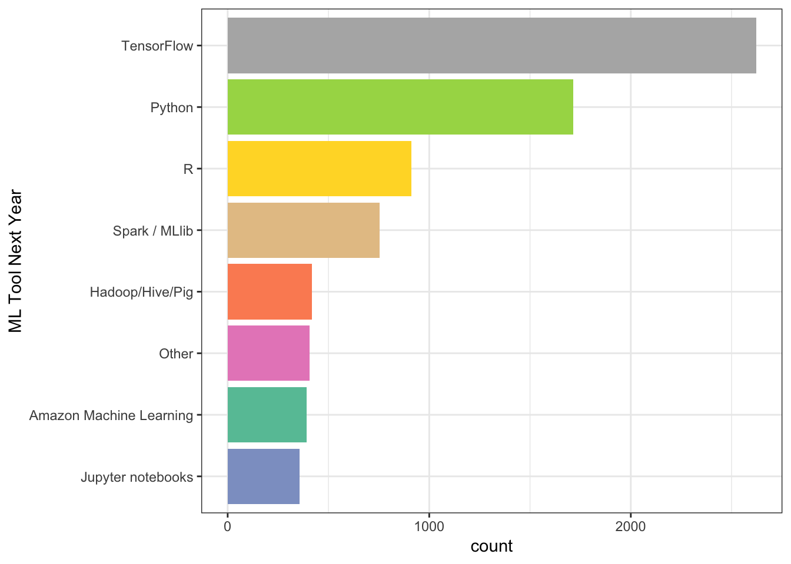
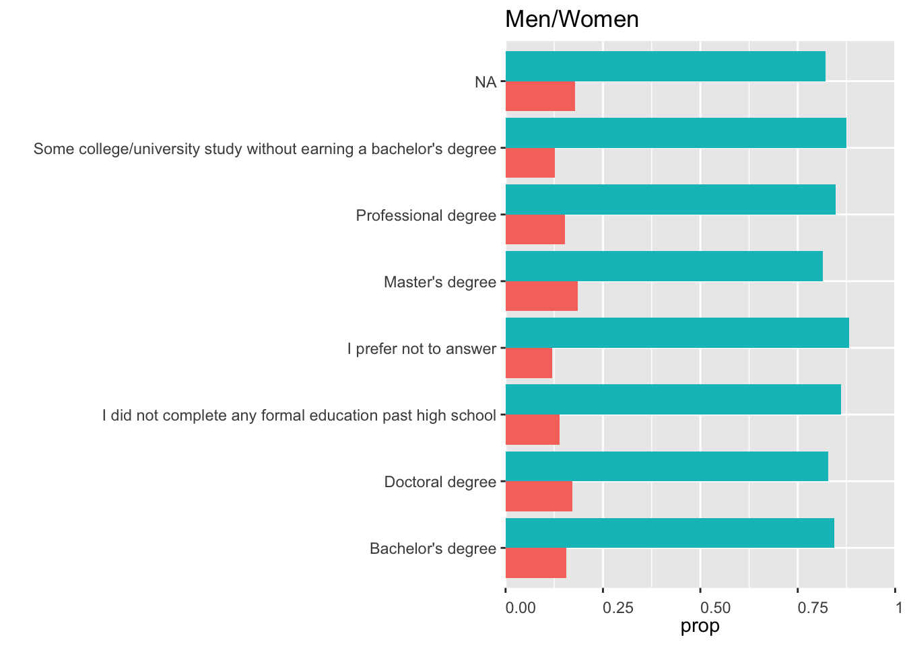
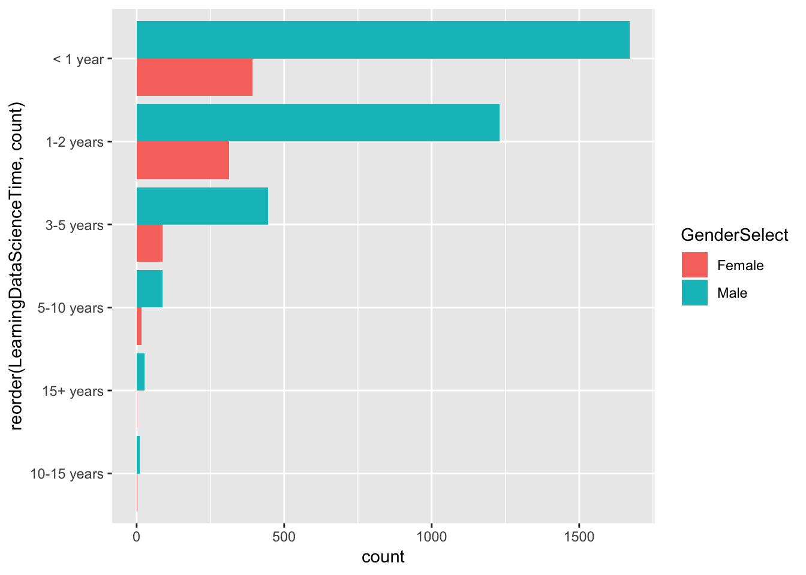
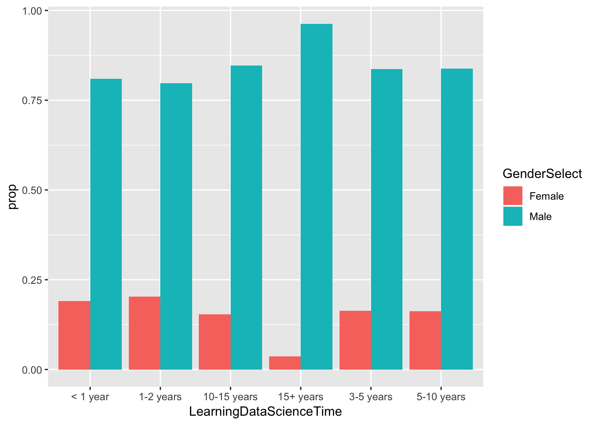
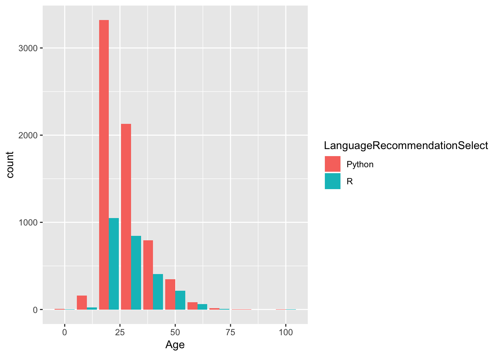
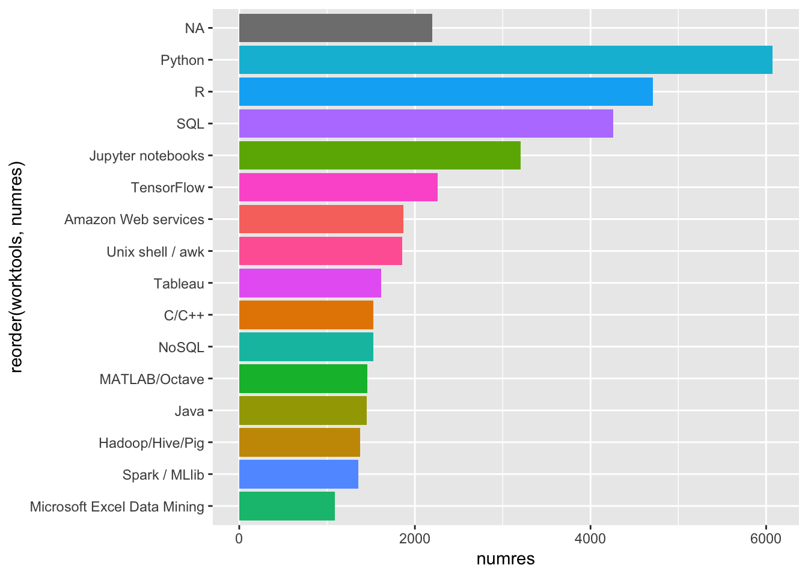
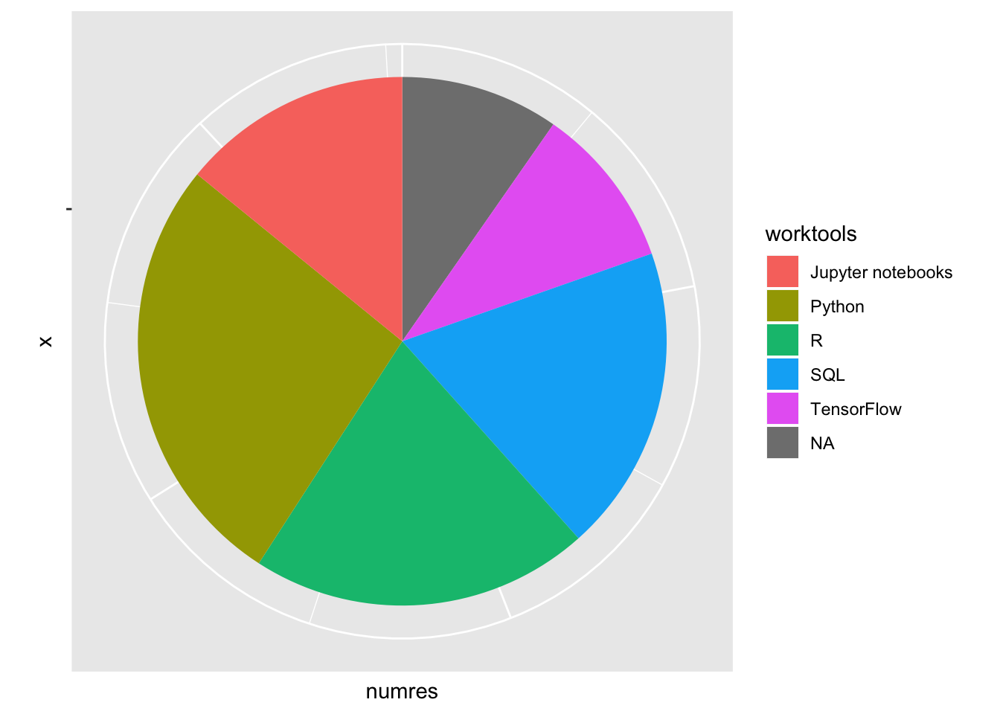
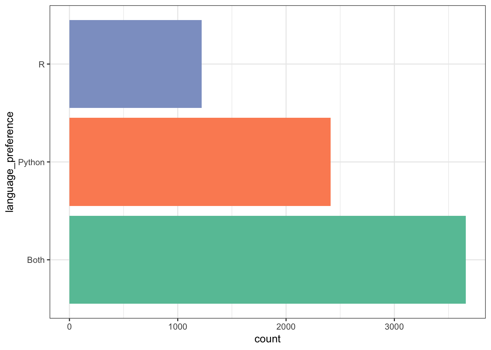
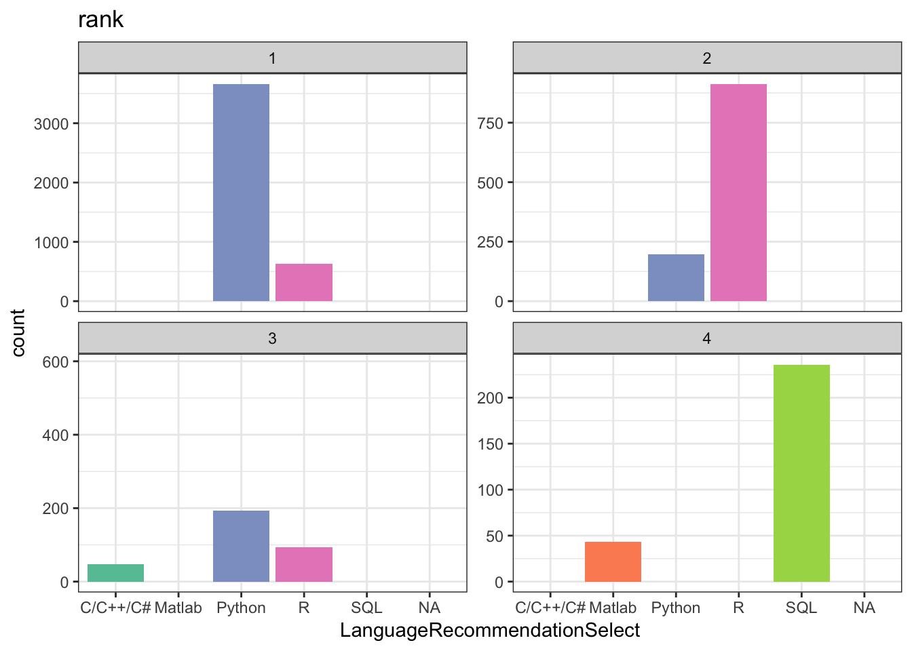

Kaggle Data Analysis
This is an R Markdown notebook. I’m using this to demonstrate using R and R Notebooks. The Example is based on the Exploring Kaggle Data Science Survery from DataCamp.
dim(data)## [1] 16716 228data <- as.data.frame(data)data %>%
group_by(MLMethodNextYearSelect) %>%
summarize(count = n()) %>%
arrange(desc(count)) %>%
top_n(9) %>%
filter(!is.na(MLMethodNextYearSelect)) %>%
ggplot(aes(reorder(MLMethodNextYearSelect,count), count, fill = MLMethodNextYearSelect)) +
geom_col() +
coord_flip() +
scale_fill_brewer(palette = "Set2") +
theme_bw() +
theme(legend.position = "none") +
xlab("ML Tool Next Year")## Selecting by count
data %>%
group_by(MLToolNextYearSelect) %>%
summarize(count = n()) %>%
arrange(desc(count)) %>%
top_n(9) %>%
filter(!is.na(MLToolNextYearSelect)) %>%
ggplot(aes(reorder(MLToolNextYearSelect,count), count, fill = MLToolNextYearSelect)) +
geom_col() +
coord_flip() +
scale_fill_brewer(palette = "Set2") +
theme_bw() +
theme(legend.position = "none") +
xlab("ML Tool Next Year")## Selecting by count
typeof(data)## [1] "list"df <- data %>%
group_by(FormalEducation, GenderSelect) %>%
filter(GenderSelect == "Male" | GenderSelect == "Female") %>%
summarise(count = n())
edutotal <- df %>%
group_by(FormalEducation) %>%
summarise(total = sum(count))
df <- inner_join(df, edutotal, by = 'FormalEducation')
df <- df %>%
group_by(FormalEducation, GenderSelect) %>%
summarize(prop = count/total) %>%
arrange(prop) %>%
ggplot(aes(reorder(FormalEducation,prop), prop, fill = GenderSelect)) +
geom_col(position = "dodge") +
coord_flip(ylim=c(0,1)) +
theme(legend.position="none") +
xlab("") +
ggtitle("Men/Women") +
scale_y_continuous(expand = c(0, 0)) +
theme(axis.text.x = element_text(angle=0,
vjust=0,
hjust=0))
df # Data Exploration
df <- data %>%
group_by(FormalEducation, GenderSelect) %>%
filter(GenderSelect == "Male" | GenderSelect == "Female") %>%
summarise(count = n())
ggplot(df,aes(GenderSelect, count)) + geom_col(aes(fill = FormalEducation))
data %>%
group_by(GenderSelect, StudentStatus) %>%
filter(GenderSelect == "Female" | GenderSelect == "Male") %>%
summarize(count = n())data %>% group_by(LearningPlatformSelect) %>%
summarise(count = n())learning <- data
respondent <- 1:nrow(learning)
learning <- cbind(respondent, learning)
learning <- learning %>%
select(respondent, GenderSelect, Country, Age, EmploymentStatus, LearningPlatformSelect) %>%
mutate(learntools = strsplit(LearningPlatformSelect, split = ",")) %>%
unnest()
learning <- learning %>%
group_by(learntools) %>%
summarise(numres = n())
learning <- learning %>%
filter(numres > 1000) %>%
arrange(desc(numres)) %>%
filter(!is.na(learntools))
ggplot(learning, aes(reorder(learntools, numres), numres, fill = learntools)) +
geom_col() +
coord_flip() +
theme(legend.position="none") +
xlab("Learning Tool") +
ylab("Count")
unique(data$LearningDataScienceTime)## [1] NA "1-2 years" "< 1 year" "3-5 years" "15+ years"
## [6] "5-10 years" "10-15 years"df <- data %>%
group_by(LearningDataScienceTime, GenderSelect) %>%
summarise(count = n()) %>%
arrange(LearningDataScienceTime) %>%
filter(GenderSelect == "Male" | GenderSelect == "Female") %>%
filter(!is.na(LearningDataScienceTime))
ggplot(df,aes(reorder(LearningDataScienceTime,count), count, fill = GenderSelect)) +
geom_col(position = "dodge") +
coord_flip()
df <- df %>% group_by(LearningDataScienceTime) %>%
mutate(total = sum(count))
df <- df %>%
mutate(prop = count/mean(total))
df$LearningDataScienceTime <- as.factor(df$LearningDataScienceTime)
df %>%
ggplot(aes(LearningDataScienceTime, prop, fill = GenderSelect)) +
geom_col(position = "dodge")
name <- function(variables) {
}df <- data %>%
group_by(LanguageRecommendationSelect) %>%
summarise(count = n()) %>%
filter(count > 90)
df <- df[complete.cases(df), ]
ggplot(df,aes(LanguageRecommendationSelect, count)) + geom_col(aes(fill = LanguageRecommendationSelect)) + scale_y_continuous(expand = c(0,0)) +
theme(legend.position="none") +
coord_flip()df <- data
df <- df[c("LanguageRecommendationSelect","Age", "GenderSelect")]
df <- df[complete.cases(df), ]
df <- df %>%
mutate(Age = floor(Age/10) * 10)
df <- df %>% group_by(Age, LanguageRecommendationSelect) %>%
summarise(count = n()) %>%
filter(LanguageRecommendationSelect == "R" | LanguageRecommendationSelect == "Python")
df %>% ggplot(aes(Age, count, fill = LanguageRecommendationSelect)) + geom_col(position = position_dodge())
0.1 Split and Unnest()
tools <- tools %>%
mutate(worktools = strsplit(WorkToolsSelect, split = ",")) %>%
unnest()
tools %>% select(Respondent ,worktools)0.2 Most Popular Language
library(RColorBrewer)
tools_count <- tools
# group by work_tools and show counts
tools_count <- tools_count %>%
group_by(worktools) %>%
summarise(numres = n())
tools_count <- tools_count %>%
filter(numres > 1000) %>%
arrange(desc(numres))
ggplot(tools_count, aes(reorder(worktools, numres), numres, fill = worktools)) +
geom_col() +
coord_flip() +
theme(legend.position="none")
#theme(axis.text.x = element_text(angle=20,
# vjust=0.5,
# hjust=1))0.3 Pie Chart
pie_tools <- tools_count
pie_tools <- pie_tools %>% filter(numres > 2000)
pie_tools %>%
ggplot(aes("", numres, fill = worktools)) +
geom_bar(width = 1, stat = "identity") +
coord_polar("y", start=0) +
theme(axis.text.x=element_blank())
0.4 People Using R, Python, or Both
debate_tools <- df
# Creating a new column called language preference
debate_tools <- debate_tools %>%
mutate(language_preference = case_when(grepl("R", WorkToolsSelect) & ! grepl("Python", WorkToolsSelect) ~ "R",
grepl("Python", WorkToolsSelect) & ! grepl("R", WorkToolsSelect) ~ "Python",
grepl("R", WorkToolsSelect) & grepl("Python", WorkToolsSelect) ~ "Both"))
rp_battle <- debate_tools %>%
group_by(language_preference) %>%
summarize(count = n())
rp_battlerp_battle <- rp_battle[complete.cases(rp_battle), ]
# or you could use
#rp_battle <- filter(rp_battle, !is.na(language_preference))
rp_battle %>% ggplot(aes(language_preference, count, fill = language_preference)) + geom_col() + coord_flip() +
scale_fill_brewer(palette = "Set2") +
theme_bw() +
theme(legend.position = "none")
0.5 Who Recommends What?
recommendations <- debate_tools
debate_tools <- debate_tools %>% filter(!is.na(LanguageRecommendationSelect))
recommendations <- recommendations %>%
group_by(language_preference, LanguageRecommendationSelect) %>%
summarize(count = n())
recommendations <- recommendations %>% arrange(desc(count)) %>%
mutate(rank = row_number()) %>%
filter(rank <= 4) %>%
arrange(language_preference)0.6 Facet_wrap Plot
ggplot(recommendations, aes(LanguageRecommendationSelect, count, fill = LanguageRecommendationSelect)) +
geom_bar(stat = "identity") +
facet_wrap(~ rank, scales = "free_y") +
scale_fill_brewer(palette = "Set2") +
theme_bw() +
theme(legend.position = "none") +
ggtitle("rank")
0.7 Summation
It looks like python is the clear winner by popularity, but R isn’t too far behind.
Copyright © 2019 Tomas Leriche. All rights reserved.